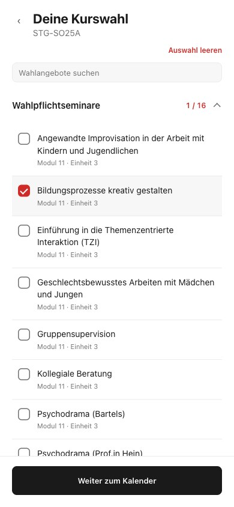
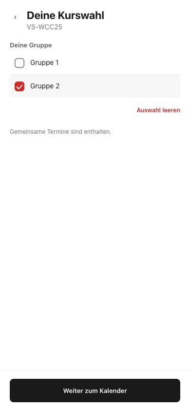
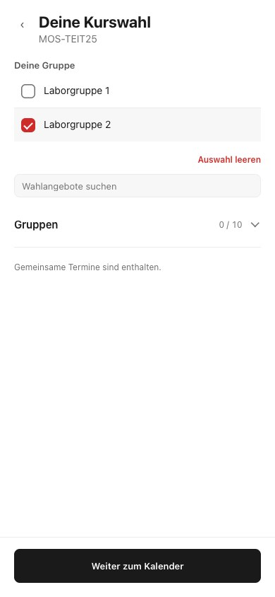
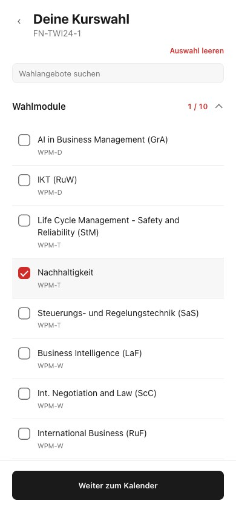
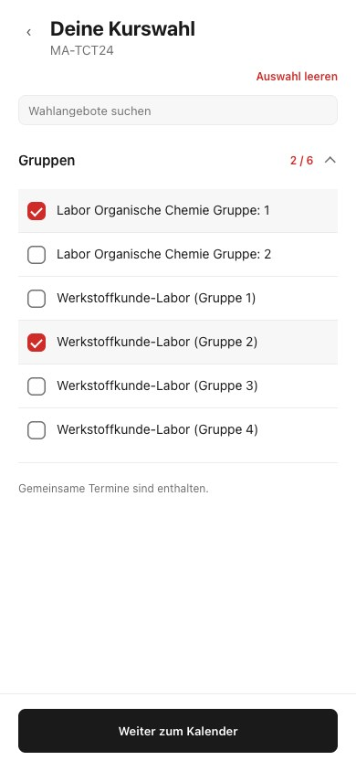

Stuttgart
STG-SO25A
Wahlpflichtseminare und Studienrichtungen

Echte lokale App · 16. Oktober 2026 · Bild anklicken für Originalgröße
STG-SO25A
Wahlpflichtseminare und Studienrichtungen

VS-WCC25
Zusätzlicher Gruppenplan

MOS-TEIT25
Laborgruppen und Gruppenmodule

FN-TWI24-1
Wahlmodule im eigenen Kursplan

MA-TCT24
Laborgruppen im Veranstaltungstitel
